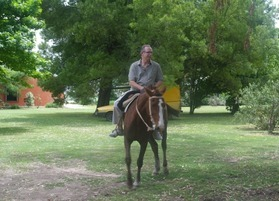
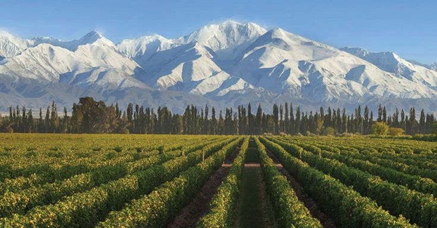
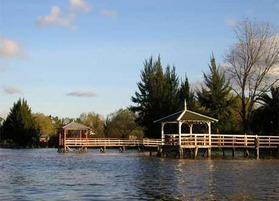
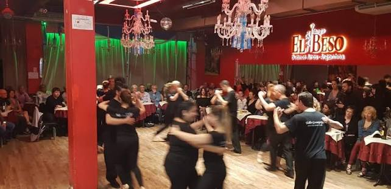

Idée voyage en petit groupe · 18 jours / 17 nuits
Argentine · Tango & Bodegas
Buenos Aires, Pampa & Mendoza
Demander un devis gratuit18 jours au cœur de l'Amérique latine
Direction l'Argentine pour un circuit qui marie passion et authenticité : 18 jours entre les milongas historiques de Buenos Aires, le grand air de la Pampa et les vignobles réputés de Mendoza, au pied de la Cordillère des Andes. Ce circuit combine culture, gastronomie et nature pour une expérience inoubliable, entre spectacles de tango authentiques, dégustations de Malbecs d'exception et paysages époustouflants.
Le voyage en un coup d'œil

🏛️ Buenos Aires
- La ville qui a vu naître le tango
- Microcentro animé et milongas légendaires
- San Telmo, Recoleta, La Boca
- Quartiers historiques et théâtres

💃 Le tango argentin
- Stage de 10h avec professeurs locaux
- Milongas chaque soir
- Perfectionnement et improvisation
- Ambiance authentique porteña

🐎 La Pampa
- Estancias, chevaux et traditions gauchos
- Grandes plaines argentines
- Asado traditionnel au cœur de la campagne
- Soirée tango pour clore la journée

🏔️ Mendoza & les Andes
- Capitale du vin argentin
- Bodegas renommées et Malbec d'exception
- Sommets andins et Aconcagua (6 962 m)
- Pont de l'Inca (2 700 m)

🌊 Delta du Tigre
- Labyrinthe de canaux paisibles
- Villas centenaires sur pilotis
- Balade en bateau-bus
- Parenthèse nature à 1h de Buenos Aires

🎶 Les Milongas
- Lundi Gricel · Mardi La Catedral
- Mercredi La Villa Malcolm
- Jeudi Maldita Milonga · Vendredi Salon Marabú
- Samedi Sunderland · Dimanche El Beso
L'asado, art de vivre argentin
Une journée dans la Pampa, près de General Belgrano : troupeaux, chevaux, traditions gauchos et grillade traditionnelle au cœur des grandes plaines.
Votre itinéraire jour par jour
1ère semaine : Buenos Aires & Pampa
Arrivée à Buenos Aires
Installation au Microcentro. Première immersion dans la culture argentine : 9 de Julio, Congrès, Plaza de Mayo, Av. de Mayo, Edificio Barolo. Pause au Café Tortoni et dîner-spectacle de tango.
Début du stage de tango
Stage de 10h avec professeurs locaux. Soirée : première milonga (Le Club Gricel). Découverte des quartiers de San Telmo et La Boca.
Recoleta et Abasto
Parque San Martín, Cimetière de la Recoleta, librairie El Ateneo. Quartier de l'Abasto : Musée Carlos Gardel. Soirée milonga (La Catedral, Le Viejo Correo).
La Boca & Puerto Madero
Av. Almirante Brown, Casa Amarilla, Caminito, Stade Bombonera. Après-midi : Réserve naturelle Costanera Sur, Frégate Sarmiento. Soirée milonga (Maldita Milonga).
Excursion dans la Pampa
À 170 km de Buenos Aires, près de General Belgrano : estancia, troupeaux, chevaux et traditions gauchos. Authentique asado traditionnel. Soirée tango pour clore la journée.
Delta du Tigre
À une heure de Buenos Aires : canaux paisibles, villas centenaires, balade en bateau-bus. Après-midi libre. Soirée milonga (Salon Marabú).
Dernière journée à Buenos Aires
Palermo, Plaza Serrano, boutiques et parcs. Journée libre pour explorer à son rythme. Soirée milonga (Le Club Sunderland).
2ème semaine : Mendoza & les Andes
Route vers Mendoza
Cap sur l'Ouest et la Cordillère des Andes : 1 049 km par la mythique Nationale 7, en autocar longue distance tout confort lit-suite. Traversée de nuit de l'immensité argentine.
Arrivée à Mendoza
Installation en hôtel centre-ville. Il fait bon flâner dans les rues de Mendoza, où le soleil brille 320 jours par an. Visite de la ville et première bodega.
Patrimoine viticole
Musée du Vin, Bodega La Rural, puis dégustation chez Trapiche, l'une des maisons emblématiques de la région. Le Malbec, cépage français d'origine, a trouvé à Mendoza son terroir de prédilection.
Journée libre à Mendoza
Temps libre pour prolonger la découverte : bodegas supplémentaires, shopping d'artisanat, ou détente en ville. Déjeuner pris ensemble.
Excursion vers l'Aconcagua
Direction la Cordillère, jusqu'à la frontière du Chili. L'Aconcagua (6 962 m), plus haut sommet des Amériques. Pont de l'Inca (2 700 m). Soirée milonga « Au Café Soul » avec l'association Ana y Luis Tango.
Retour vers Buenos Aires
Traversée retour par la Nationale 7. Arrivée à Buenos Aires en soirée.
Buenos Aires & despedida
Dernières découvertes, shopping, milongas d'adieu. Soirée de despedida avec le groupe.
Retour en France
Petit-déjeuner et transfert à l'aéroport. Vol international de retour avec le tango dans le cœur et le Malbec dans les souvenirs.
Les temples du tango à Buenos Aires
Lundi Gricel · Mardi La Catedral · Mercredi La Villa Malcolm · Jeudi Maldita Milonga · Vendredi Salon Marabú · Samedi Sunderland · Dimanche El Beso
Avant le départ & sur place
📄 Formalités
Aucun visa n'est nécessaire pour un séjour touristique. Prévoir une photocopie du passeport.
🗣️ Langue & Décalage
Espagnol. Décalage horaire : -5h par rapport à Paris.
💰 Monnaie
Peso argentin (ARS). Taux indicatif : 1 € = 1 706 ARS. Conseil : ne jamais changer à l'aéroport. Utiliser Western Union, les « cuevas » ou casas de cambio.
🎒 Conseils pratiques
- Métro : 5h-22h (lun-sam), 8h-minuit (dim)
- Prises : Norme européenne, 220 V
- Chaussures : Bonnes chaussures de ville + chaussures de tango
- Sac léger : Sac à dos pour Mendoza (appareil photo, caméscope)
Votre itinéraire sur la carte
De Buenos Aires à Mendoza, en passant par la Pampa et la Cordillère : cliquez sur chaque point doré pour découvrir les étapes de votre voyage.
Bon séjour au pays du Tango et des Bodegas !
Construisons ensemble votre itinéraire sur mesure de 18 jours en Argentine.
Parlons de votre projet →